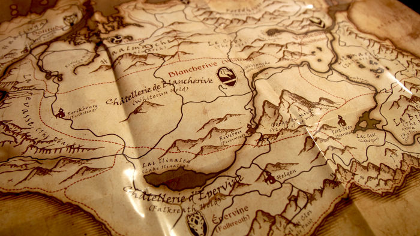
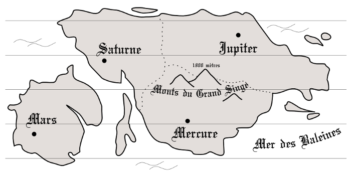
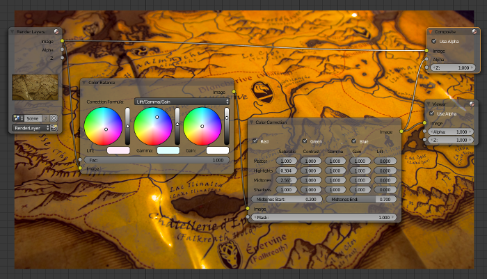

Cartographie d’un univers fictif (par Diatomée)
Cet article n’a pas pour objectif d’orienter vers la conception d’un type spécifique de carte. Ainsi, il parle des cartes célestes, maritimes et terrestres. Il recense les principaux éléments que l’on retrouve généralement en cartographie, afin de donner des pistes pour la conception d’une carte.
Utilité d’une cartographie
Une cartographie peut avoir deux fonctions : aider à écrire une histoire en cohérence avec un monde fictif, permettre de façon ludique de suivre l’histoire pour celui ou celle qui la lit.
Pour l’auteur·e
La carte sera assez brouillonne, mais suffisante pour permettre de s’y retrouver. En un coup d’œil, on y retrouvera les informations voulues pour rédiger un passage. C’est un outil très pratique qui sera en perpétuelle modification si vous réalisez votre carte en même temps que votre histoire. À ce propos, il existe plusieurs façons d’aborder la création de carte.
Certaines personnes aiment partir d’une idée à développer dans leur histoire. Par exemple, voici une idée que l’on m’a soumise :
Un gamin veut aller à la capitale pour s’engager dans l’Armée.
Cela indique un endroit de départ et un autre d’arrivée (la Capitale). Voilà deux points à représenter sur une carte et un trajet qui les relie. On pourra également faire un plan de la Capitale si un grand nombre de choses s’y passent (un plan étant une carte dont l’espace représenté est bien plus petit).
D’autres préfèrent définir entièrement le monde et ensuite partir sur la rédaction d’une ou plusieurs histoires. Cela a l’avantage de ne pas venir modifier la carte sans arrêt, mais tout le travail de conception du monde ne figurera probablement pas dans la ou les histoires. Avec cette méthode, on peut facilement avoir l’impression d’avoir pensé à des choses qui ne servent à rien, mais au fond, on devrait ressentir plus de profondeur au monde. Bien sûr, il faut que le monde créé à la base vous inspire à lui donner vie à travers l’écriture. C’est la solution que je préfère.
Une dernière façon de faire serait d’écrire toute l’histoire, puis réaliser une carte seulement après. Dans ce cas, la carte sera simple à réaliser et ne contiendra que le nécessaire, sauf si l’on souhaite écrire de nouvelles histoires autour du monde de fiction inventé. L’inconvénient est de dégoter des incohérences dans l’histoire, de devoir la modifier et d’avoir au final un monde peu travaillé.
Pour la lectrice, le lecteur
La carte décore l’ouvrage, au même titre qu’une illustration et apporte une information, au même titre qu’un bestiaire ou une chronologie. Elle ne devrait pas être indispensable à la bonne compréhension d’une histoire, mais juste la compléter (mais rien n’est obligé). C’est un extra. Les informations qui y figurent ne dévoilent aucunement l’intrigue et on peut s’y référer pour suivre une expédition, se remémorer un passage de l’aventure. La carte peut tromper la lectrice ou le lecteur au même titre que celui qui la détient dans le récit (si tel est le cas). On la retrouve généralement dans les livres de Fantasy, mais les cartographies inventées peuvent également correspondre au Merveilleux (autre sous-registre de la fiction).
Concevoir une carte
Cette partie parle de la création d’une carte destinée à figurer dans l’ouvrage. Celle-ci se créait généralement à partir des cartes réalisées pour l’auteur·e.
Quelle partie du monde faire figurer sur ma carte ? Quelle échelle utiliser ? Que vais-je y représenter ? Le relief, la politique, le climat, les cités, la végétation ? Est-ce que je fais comme si un personnage de mon histoire l’avait réalisé ? Et si oui, à quelle époque, avec quel niveau de connaissances ? Est-elle exacte ou complètement fausse ? Voilà les principales questions à se poser. À vous de trouver les réponses.
Réflexion
Que souhaite t-on montrer sur cette carte ? Bien souvent, on y représente le relief, les lieux habités, les grandes forêts, les différents chemins (parcours de l’eau, voies reliant les lieux, etc). Ainsi figurent fréquemment sur les cartes des montagnes, des lacs, des noms de villes, des noms de forêts, des délimitations et bien d’autres choses. Un exemple bien connu de ce genre de carte est celle de la Terre du Milieu inventée par J.R.R. Tolkien. On peut aussi citer la carte de Bordeciel (présente dans le jeu Skyrim - The Elder Scroll V) que je vous ai prise en photographie :
Ce type de carte est idéal pour les récits d’aventure où les personnages voyagent, dans un monde parallèle au notre. Si le monde n’en est qu’un parmi tant d’autres et que les voyageurs du récit s’y promènent comme ils iraient d’une ville à une autre, alors il peut être intéressant d’avoir une carte du ciel où figure les différentes planètes, leurs circonférences, leurs noms, etc. La carte du ciel de Star Wars en est un exemple. Si le monde contient quelque chose d’une importance capitale dans l’histoire, alors il y a peut-être un intérêt à le représenter.
Faut-il représenter totalement ou partiellement le monde ? Cela dépend de votre envie. Si vous trouvez utile de tout mettre, allez-y. L’idéal serait de connaitre à l’avance les dimensions du livre dans lequel figurera la carte pour choisir l’échelle qui va bien. Il peut être intéressant de créer un atlas (ensemble de plusieurs cartes), si le livre dispose d’un petit format (poche ou A5). Il est également possible, sur une même carte, d’avoir des agrandissements de zone nécessitant plus de détails que d’autres.
Une autre solution serait d’avoir une belle carte pliée en plusieurs fois et glissée dans le livre. Si le récit se déroule entièrement sur une planète qui possède 3 satellites naturels par exemple, il est inutile de faire une carte céleste. Par contre, il peut être intéressant d’ajouter un schéma qui agrémente la carte. Il indiquerait les phases de chaque satellites aperçues depuis cette planète.
La carte provient-elle du monde même ? Si l’on apprend que la carte provient du monde fictif au cours de l’histoire, alors la réponse est oui. Autrement, c’est comme vous voulez. Si la carte a été réalisée par quelqu’un de votre histoire ou quelqu’un ayant vécu dans votre monde, alors il faudra qu’elle aborde un style graphique connu de votre monde, avec des techniques usitées de votre monde. Ne faites pas une magnifique carte avec des inscriptions en français si personne ne connait cette langue dans votre monde. Cependant, en raisonnant logiquement, une carte d’un univers ne peut venir que de cet univers (sauf si celui-ci est lié au monde réel). De ce fait, si elle parvient aux personnes lisant l’histoire, c’est que l’auteur·e en a réalisé une copie. Il est donc possible qu’elle soit traduite (tant au niveau des écrits qu’au niveau des divers symboles), afin qu’elle soit comprise par le monde réel.
Dernière chose : s’il s’agit d’un monde parallèle (un monde « comme sur Terre »), alors il ne faut pas oublier des choses essentielles comme le cycle de l’eau, le mouvement des plaques tectoniques créant les montagnes, les volcans, les vallées, séparant les continents, morcelant la Pangée. Une planète ronde dispose de climats très variables.
Réalisation
Le matériel et les logiciels
Une carte peut se réaliser sur un grand nombre de supports : papier, peau, bois, cuir, pierre, tissus, … Certains d’entre eux nécessitent obligatoirement l’utilisation d’outils manuels. Le papier est un choix naturel pour un livre et soit on réalise sa carte « à la main », soit on la fait sur ordinateur, soit on commence manuellement, puis on numérise. Obtenir une carte numérique a le grand avantage de pouvoir l’imprimer et d’en avoir autant de copies que nécessaire.
Le matériel de création manuel de carte est très varié. Suivant le style recherché, on utilisera la plume et l’encrier, le pinceau, le feutre, le crayon, le fusain, le pastel, une règle, un compas, etc. L’erreur est peu permise et la minutie est de rigueur.
Créer une cartographie de son propre monde avec des outils informatiques est, je pense, la meilleure solution. Un tracé peut être épaissi en deux clics, on peut changer sa couleur tout aussi simplement. Il est également simple de le modifier et d’obtenir un aspect « fait main » pour les cartes à l’aspect médiéval par exemple. On peut créer des calques pour séparer les éléments de la carte et les retoucher individuellement avec plus de facilité. On peut commencer par créer une carte vectorielle (ce qui permet d’obtenir une image sans la moindre perte de qualité, peu importe l’agrandissement appliqué). Le meilleur logiciel gratuit pour faire ceci est Inkscape. Dans le même genre, mais payant et pas forcément mieux il y a Adobe Illustrator. Voici un début de carte réalisé avec Inkscape juste pour cet article :
J’ai fait ça en 10 minutes. C’est très basique, mais on peut constater que le logiciel permet au moins :
- de faire suivre une courbe aux textes voulus
- d’aligner des lignes
- de les espacer parfaitement, d’obtenir plusieurs formes de contours.
C’est donc un logiciel vraiment utile pour concevoir des cartes et son apprentissage n’est pas très complexe. Une carte peut être entièrement réalisée avec Inkscape.
Deux autres excellents logiciels pour obtenir un style fait « main » sont MyPaint et Krita. Je préfère le premier pour le dessin pur, mais lorsqu’il s’agit de jouer avec des calques et des retouches de couleurs, il vaut mieux utiliser le second. Pour ces logiciels, une tablette graphique est quasiment indispensable. Il faut s’y connaitre en dessin, mais tout s’apprend avec l’envie.
Les retouches peuvent être faites avec Krita, Gimp, Blender ou Photoshop (payant). Ma préférence va pour le moment à Blender qui est à la base un logiciel de création 3D. Je trouve le système nodal particulièrement performant. Voilà à quoi cela peut ressembler, mais cette solution n’est probablement pas adaptée aux débutants, mais encore une fois, tout s’apprend :
On peut voir dans la première boite grise (à gauche) l’image d’origine, assez terne. Deux boites permettent de régler les couleurs (au centre) et deux autres (à droite) permettent d’obtenir le résultat. L’image du fond est ce résultat, bien plus lumineux et sympathique à regarder. Blender dispose de nombreuses boites permettant d’incroyables effets et est entièrement gratuit.
Voilà pour les outils et logiciels. Il en existe d’autres bien sûr, mais je n’ai pas eu l’occasion de les utiliser.
Échelle, rose des vents et projection
Ce qui est bien avec la représentation d’un monde fictif, c’est qu’il n’est pas obligatoire de prendre des mesures, contrairement au monde réel où toutes les distances et dimensions sont prises pour être le plus fidèle à la réalité. Évidemment, si votre histoire engendre votre monde et votre carte (et non l’inverse), alors il faudra prendre en considération certaines mesures pour réaliser la carte. Par exemple, si votre joyeuse troupe de nains met dix jours pour aller d’un endroit à un autre et que votre carte et l’échelle associée indique qu’elle aurait dû marcher durant dix mois, alors ça ne va pas.
Il y a trois façons de noter l’échelle :
- en utilisant une équivalence (exemple : 1cm = 20m)
- en utilisant un rapport (exemple : 1:2000)
- graphiquement
La première comme la seconde façon sont à éviter, car dès que l’on redimensionne la carte (et cela risque d’arriver, volontairement ou non), l’échelle devient totalement fausse. La méthode graphique est la meilleure, car l’échelle se redimensionne avec le dessin et reste donc exacte. Voilà à quoi peut ressembler ce type d’échelle :

La rose des vents n’est pas un élément obligatoire (comme l’échelle d’ailleurs). Elle indique au minimum les 4 points cardinaux, mais peut également pointer les directions intermédiaires. Les directions sont généralement le Nord, l’Est, le Sud et l’Ouest, mais pour un monde fictif, elles peuvent très bien indiquer d’autres choses. C’est un élément très décoratif qui peut être présent plusieurs fois. Les lignes directionnelles peuvent partir de la rose des vents et s’étendre sur toute la carte tel les rayons d’un soleil.
La projection est la façon dont les points composant le monde sont positionnés sur une carte. Un monde rond nécessite un calcul mathématique pour être aplati. Le but est de partir d’une sphère (la Terre par exemple) pour la transformer en plan (la carte). Encore une fois, ce qu’il y a de bien avec un monde fictif, c’est qu’il est bien souvent inutile de partir dans des calculs mathématiques complexes. Il faut néanmoins garder à l’esprit que si la carte représente la totalité du monde, l’extrémité gauche de la carte doit concorder avec l’extrémité droite, comme les pièces d’un puzzle. Cela est vrai si l’on choisit une projection cylindrique équidistante par exemple.
Une jolie carte
Si votre monde dispose d’un art particulier, de divinités ou je ne sais quoi qui a de l’importance, qui rend une ambiance, alors cela devrait se ressentir dans le style graphique de la carte. Un cadre ornemental pour la carte pourrait raconter en image l’histoire passée du monde ou dévoiler ses créatures féeriques. Il faut analyser un maximum de cartes existantes (fictives ou pas) et comprendre ce que l’on aime dans chacune d’elle, ce qui a été bien pensé, ce qui est original. Il faut voir comment sont représentées les montagnes, les villes, les frontières. L’inspiration et la créativité viendront ensuite naturellement. Quelques bateaux sur les vagues de l’océan et un dragon des mers, des pics rocheux si haut qu’ils sont auréolés d’or, des blasons pour les cités, un jeu de typographies en concordance avec le reste, des monuments importants, etc. Amusez-vous !